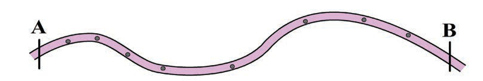
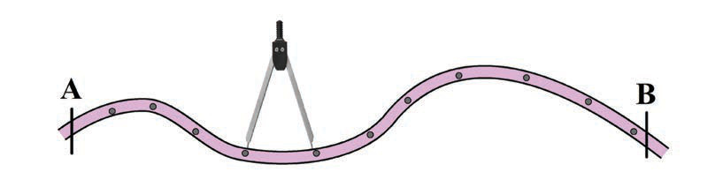
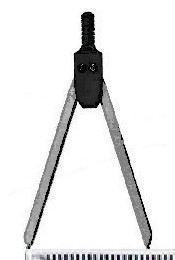
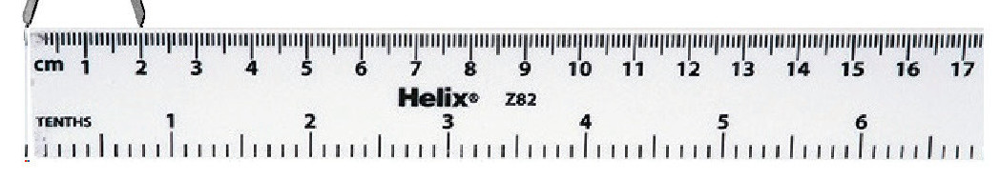

(b) Gawa umbali unaohitajika kupimwa katika vipande vifupivifupi ambavyo vimenyooka na weka alama kama inavyowasilishwa katika Kielelezo namba 17.

Kielelezo namba 17: Vipande vilivyo nyooka vinavyohitajika kupimwa kutoka kituo A hadi B
(c) Tumia bikari kupata urefu wa kila kipande kimoja baada ya kingine kama inavyowasilishwa katika Kielelezo namba 18;

Kielelezo namba 18: Umbali usionyooka unaopimwa kwa kutumia bikari
(d) Pima umbali wa kila sehemu ulizozigawa kwa kutumia rula na uzinakili katika karatasi kama inavyowasilishwa katika Kielelezo namba 19;


Kielelezo namba 19: Rula na bikari